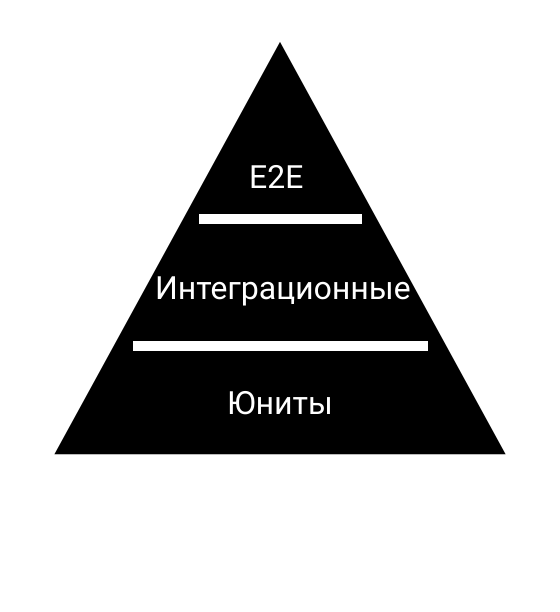
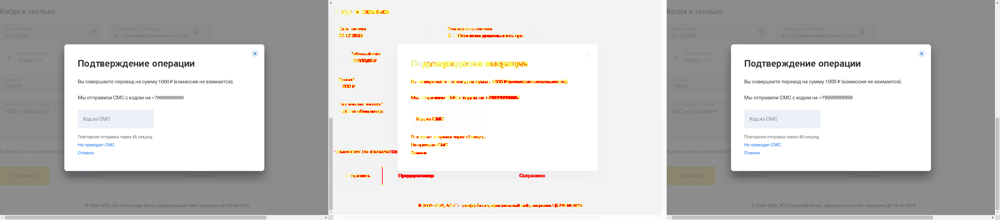
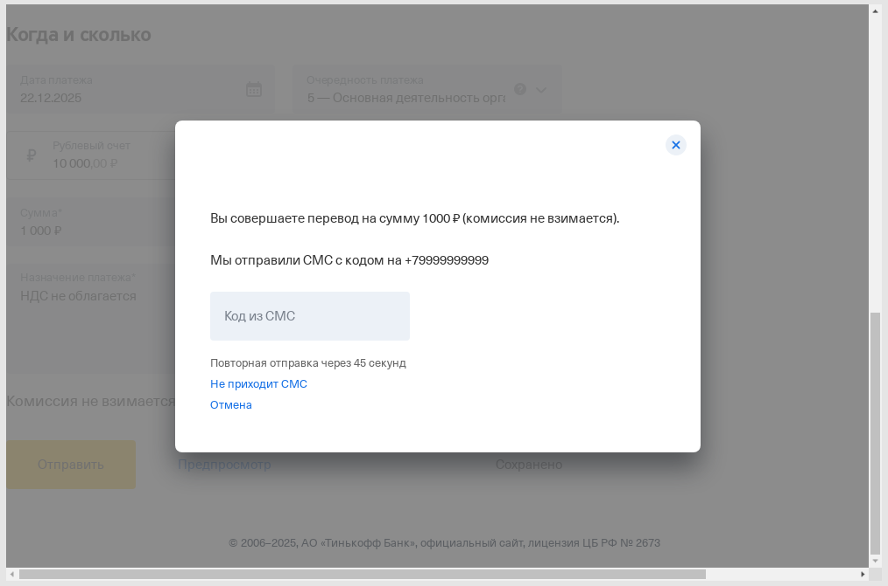

- Юнит тесты - тесты на компоненты через PageObject, тесты на сервисы, функции, хелперы и т.д.;
- Интеграционные тесты - тесты на ваше приложение в prod-like режиме без бэкенда;
- E2E тесты - тесты на ваше приложение в prod режиме, где проверяется работа с реальным бэком.
Cypress
Опыт написания интеграционных тестов
Отступление
Зачем нужны тесты?
- Проверка нового кода
- Изменения не сломали старый код
- Документация
Пирамида тестирования

Почему Cypress?
Коммьюнити

Дока 2
Debugging
Typescript
Как начать писать тесты?
"build": {
...
"cypress": {
...
"aot": true,
"fileReplacements": [
{
"replace": "PATH_TO_PROJECT/environment.ts",
"with": "PATH_TO_PROJECT/environment.prod.ts"
}
]
}
}
"serve": {
...
"configurations": {
...
"cypress": {
"browserTarget": "main-app:build:cypress"
}
}
}
npm i concurrently cypress wait-on --save-dev
"serve:cypress": "ng serve -c cypress",
"cypress:open": "wait-on http-get://YOUR_APP_URL/main.js && cypress open",
"cypress:run": "wait-on http-get://YOUR_APP_URL/main.js && cypress run",
"test:integrations": "concurrently -k --success first \"npm run serve:cypress\" \"npm run cypress:run\""
Локальная разработка
Запускаем сборку
npm run serve:cypress
Запускаем cypress
npm run cypress:open
Идем писать тест

Основные принципы написания интеграционных тестов
Мокируем задник (cy.route ваш бро навсегда)
Принцип "Один тест - один assert" не работает
Это все?
Нет
Visual regressing
Используешь Cypress - дeлай скриншот тестирование
Cypress Image Snapshot
npm install --save-dev cypress-image-snapshot
const {
addMatchImageSnapshotPlugin,
} = require('cypress-image-snapshot/plugin');
module.exports = (on, config) => {
addMatchImageSnapshotPlugin(on, config);
};
import { addMatchImageSnapshotCommand } from 'cypress-image-snapshot/command';
addMatchImageSnapshotCommand();
it('...', () => {
cy.get('...').click();
cy.matchImageSnapshot('clicked button');
})
Шрифты
Решение
Повышаем попиксельный diff до 20% ...
... и общий diff до 0.05%
Следствие - изменение текстовки дает успешный билд
Решение
Оборачиваем выполнение тестов в docker
FROM cypress/base:10
WORKDIR /app
COPY / /app/
RUN npm ci
"docker:build": "docker build -t integrations -f integrations.Dockerfile .",
"docker:run:app": "docker run --rm -v $(pwd)/cypress:/app/cypress integrations:latest",
"test:integrations": "concurrently -k --success first \"npm run serve:cypress\" \"npm run cypress:run\"",
"test:integrations:ci": "npm run docker:build && npm run docker:run:app npm run test:integrations",
npm run test:integrations:ci
Снова шрифты

Место для вашей рекламы
Решение
Заменяем удаленную загрузку шрифтов на локальные шрифты
"build": {
...
"cypress": {
...
"styles": [
"cypress/fixtures/tui-fonts.less",
"src/styles.less"
],
}
}